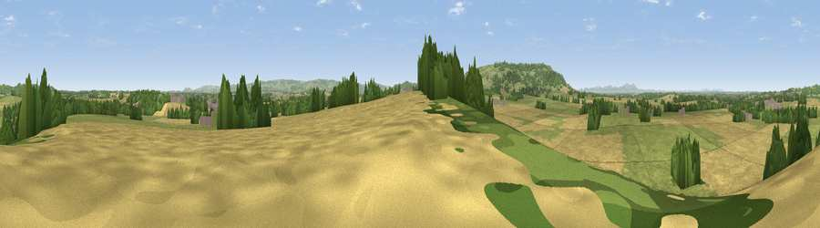

Viewpoint near Cropthorne
#16838 in England · top 42% of its area beats it · near CropthorneThe view, rendered

A 360° render of this exact spot computed from the terrain model, tree cover and land cover — summer colours, afternoon light, calibrated against photographs of famous viewpoints. Real trees, hedges and buildings will differ in detail.
The panorama
Grey silhouette: terrain skyline in each direction (720 bearings, Earth curvature and refraction included). Dashed green: skyline with trees (+15 m) and buildings (+8 m) as obstacles. Blue strip: how far the ground is visible on each bearing.
Where the view opens
Wedge length = distance to the farthest visible ground on that bearing (vegetation-aware). Rings at 10, 25 and 50 km.
What fills the view
48% cropland · 39% grassland · 11% woodland · 2% built-up
Angular shares of the visible panorama (visual magnitude), not map area. Landscape diversity 0.45 (0–1 Shannon).
Key numbers
More beautiful places nearby
The staircase of upgrades: each row has a higher view potential than everything closer. Driving times are estimates from straight-line distance, calibrated against real road routing — check an actual route before setting out.
| Place | Direction | Drive | Score |
|---|---|---|---|
| Viewpoint near Elmley Castle | SSW · 1 km | ~2 min | 57.3 |
| Viewpoint near Elmley Castle | WSW · 4 km | ~9 min | 76.9 |
| Viewpoint near Elmley Castle | SW · 5 km | ~10 min | 80.5 |
| Bredon Hill | WSW · 6 km | ~12 min | 83.0 |
| Summer Hill | W · 24 km | ~39 min | 85.4 |
| Worcestershire Beacon | W · 24 km | ~39 min | 87.1 |
| Viewpoint near West Quantoxhead | SW · 134 km | ~158 min | 87.9 |
| Viewpoint near West Quantoxhead | SW · 134 km | ~158 min | 88.7 |
52.08558, -1.99083 · source: screening · position refined by local search. Computed location — check access rights before visiting.